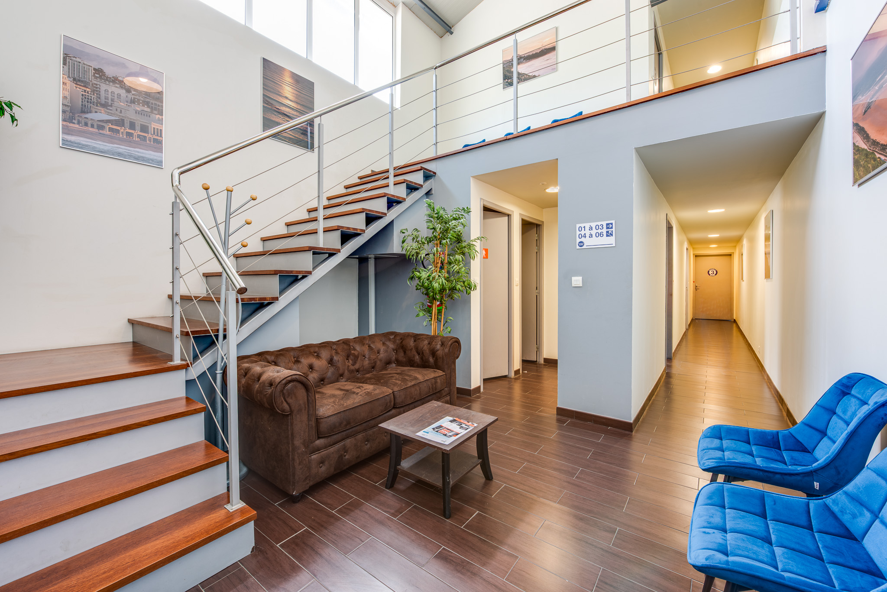
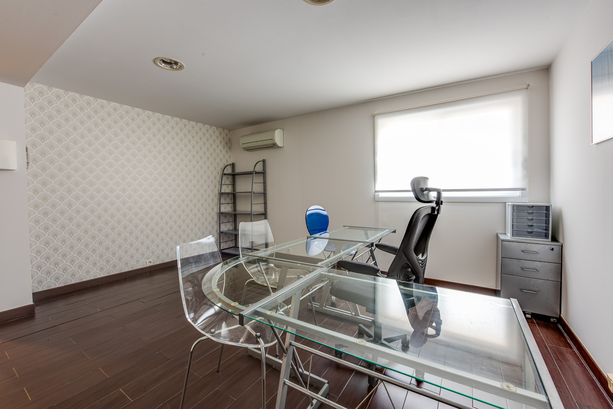
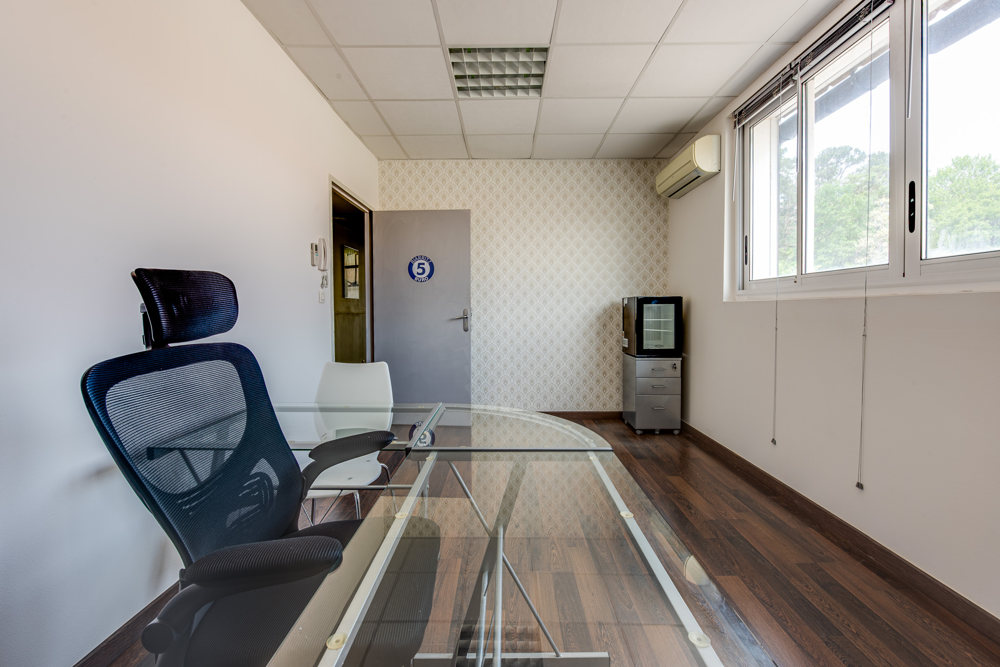
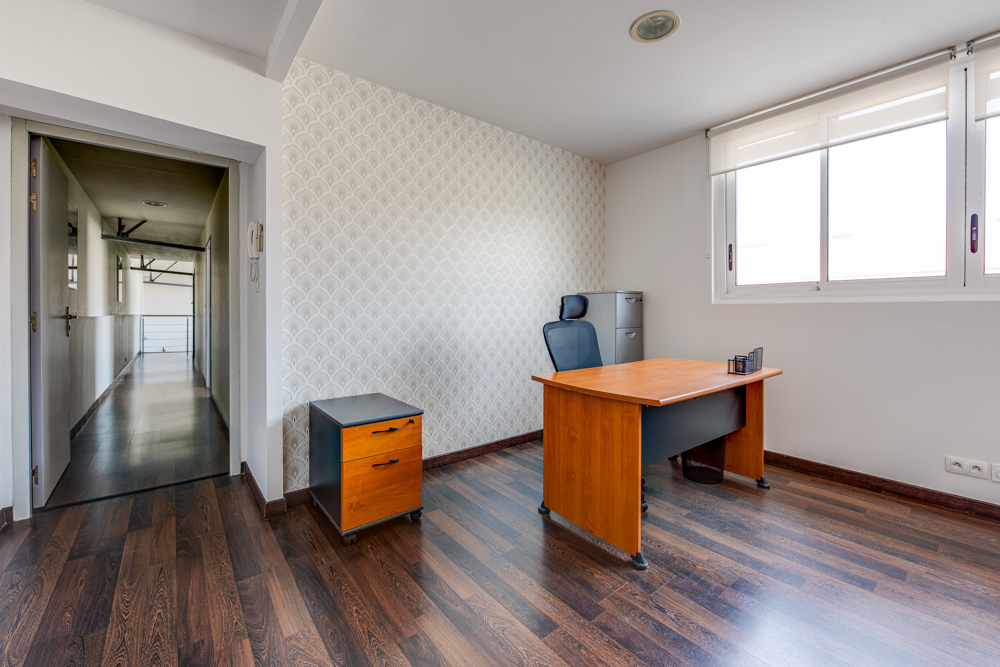
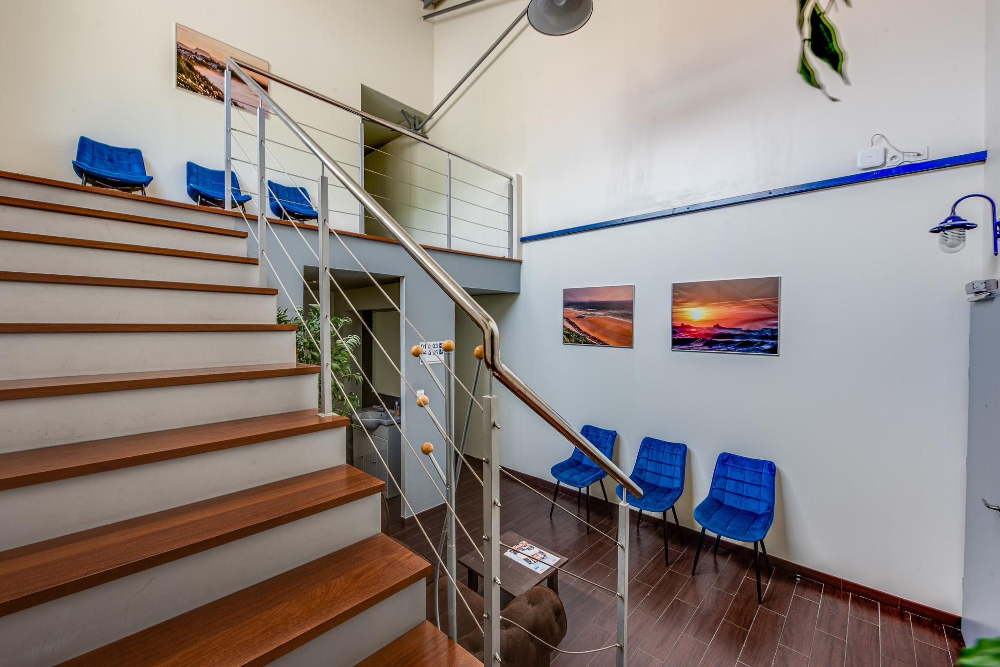

Bureaux privatifs entièrement équipés, sans bail, sans frais d'agence. Un espace professionnel clé en main au cœur du Pays Basque.
Concentrez-vous sur votre activité. Nous nous occupons de votre espace de travail.
Location par simple convention. Pas de bail 3/6/9 contraignant, pas de frais de dossier, pas de dépôt de garantie excessif.
Adresse prestigieuse au cœur de Biarritz. Proche de la gare TGV, de l'aéroport international et de toutes les commodités.
Bureau, chaises, meubles de rangement, étagères, armoires. Vous arrivez, vous travaillez. Rien à acheter, rien à installer.
Accès sécurisé par badge VIGIK, entrée indépendante, vidéosurveillance. Votre bureau accessible à toute heure.
Place de stationnement privative incluse et grand parking à disposition. Facilité d'accès pour vous et vos clients.
Autorisez votre domiciliation professionnelle à Biarritz. Adresse de prestige pour votre entreprise ou votre activité libérale.
Bureaux accessibles aux personnes à mobilité réduite. Climatisation réversible, double vitrage, éclairage basse consommation.
Espace d'accueil pour vos visiteurs avec interphone. Sanitaires séparés hommes/femmes. Service de ménage des parties communes.





Que vous soyez indépendant, profession libérale ou dirigeant, nous avons la solution qu'il vous faut.
Une adresse professionnelle à Biarritz pour votre courrier et votre immatriculation
Votre espace de travail exclusif, entièrement équipé, accessible dès demain
Partagez un espace professionnel stimulant avec d'autres entrepreneurs du Pays Basque
Centre-ville de Biarritz, Pyrénées-Atlantiques
Accès indépendant et sécurisé
Lundi au Vendredi : 9h – 18h
Accès aux bureaux : 24h/24 – 7j/7
Gare TGV de Biarritz — 5 min
Aéroport Biarritz Pays Basque — 8 min
Longtemps perçue comme une destination exclusivement balnéaire, Biarritz s'est affirmée ces dernières années comme un véritable pôle économique du Pays Basque. Avec environ 25 000 habitants intra-muros et un bassin de vie de près de 320 000 personnes à l'échelle de la Communauté d'Agglomération Pays Basque, la ville concentre une économie nettement plus diversifiée que son image de carte postale ne le laisse penser. Industries du surf et du lifestyle, numérique, santé et thalassothérapie, services aux entreprises, banque privée, professions libérales et cabinets de conseil y cohabitent et y recrutent. Cette diversification alimente une demande soutenue pour des espaces de travail professionnels, flexibles et bien situés.
L'un des atouts majeurs de Biarritz en matière d'implantation professionnelle tient à sa desserte. La gare de Biarritz-La-Négresse est traversée chaque jour par plusieurs TGV directs reliant Paris-Montparnasse en un peu plus de quatre heures, ce qui place la ville à distance de réunion de la capitale comme de Bordeaux (environ deux heures). L'aéroport de Biarritz-Pays-Basque (code BIQ), à moins de dix minutes du centre, propose des liaisons régulières vers Paris, Lyon, Nice, Genève ou Londres. Cette double desserte, inhabituelle pour une commune de 25 000 habitants, explique l'intérêt croissant des dirigeants parisiens et bordelais pour une antenne ou un siège secondaire sur la côte basque.
Le marché immobilier tertiaire de Biarritz se caractérise par une offre foncière structurellement limitée. La géographie de la commune — enserrée entre l'océan, Anglet et Bidart — et la forte pression résidentielle laissent peu de place au développement de grands programmes de bureaux neufs. Résultat : le taux de vacance reste faible, les locaux de qualité trouvent rapidement preneur et les prix se situent sensiblement au-dessus de la moyenne régionale. À titre d'ordre de grandeur, les loyers de bureaux classiques en centre-ville de Biarritz se situent généralement dans une fourchette d'environ 180 à 280 €/m²/an, avec des pics au-delà pour les adresses prestigieuses en front de mer. En comparaison, Bayonne et Anglet affichent des niveaux plus mesurés, Bordeaux se positionne dans une dynamique proche, et Paris intra-muros reste plusieurs fois plus cher, à des niveaux qui dépassent fréquemment 500 €/m²/an dans les quartiers tertiaires établis.
Louer un bureau à Biarritz via un bail commercial 3/6/9 implique un engagement long, des frais d'agence souvent équivalents à un mois de loyer, un dépôt de garantie conséquent, la prise en charge des charges et de la taxe foncière, ainsi qu'un aménagement complet à la charge du preneur : mobilier, climatisation, fibre, téléphonie, fournitures. Pour une profession libérale, un indépendant, un auto-entrepreneur ou une petite structure, ce format est souvent surdimensionné, en coût comme en rigidité.
À l'inverse, le bureau meublé et équipé loué au mois par convention de mise à disposition répond à une logique radicalement différente : tout est inclus — mobilier, connexion Wi-Fi fibre optique, climatisation, ménage des parties communes, parking privatif, domiciliation postale — et l'engagement se limite à un préavis court. Pour un bureau privatif de ce type à Biarritz, les tarifs tout compris démarrent généralement autour de 400 à 500 € par mois et s'échelonnent selon la surface et les prestations. Ce modèle, longtemps cantonné aux grandes métropoles, s'est largement diffusé dans les villes moyennes dynamiques comme Biarritz depuis la généralisation du travail hybride.
Les profils qui choisissent la location d'un bureau équipé à Biarritz sont variés. On y trouve beaucoup de professions libérales — consultants, avocats, experts-comptables, architectes, coachs, ingénieurs indépendants, psychologues — pour lesquels une adresse identifiable et un cadre de travail séparé du domicile participent directement à la crédibilité professionnelle. Viennent ensuite les auto-entrepreneurs et freelances du numérique, nombreux sur la côte basque depuis la démocratisation du télétravail, qui ont besoin d'un espace calme, connecté et accessible à toute heure. On y croise également des dirigeants de PME qui ouvrent une antenne commerciale locale, des cadres en télétravail hybride cherchant à séparer sphère privée et professionnelle, et des porteurs de projets en phase de lancement qui souhaitent domicilier leur société à une adresse solide sans engager de frais fixes élevés.
La domiciliation commerciale à Biarritz est soumise aux mêmes règles que partout en France. Une entreprise peut domicilier son siège social chez un domiciliataire agréé par la préfecture, au sein d'une société de domiciliation déclarée, ou dans un centre d'affaires disposant des autorisations nécessaires. Le contrat de domiciliation doit être écrit, d'une durée minimale de trois mois renouvelable tacitement, et l'adresse doit correspondre à un local physique où l'entreprise est réellement joignable par courrier. Domicilier son activité à Biarritz présente un intérêt concret : l'adresse figure sur les documents commerciaux, sur le Kbis, sur Infogreffe et sur tous les supports officiels, et véhicule immédiatement une image de sérieux et d'attractivité. Selon les formules, les prestations de domiciliation seule se situent généralement entre 30 et 80 € HT par mois pour une simple réception de courrier, et au-delà lorsque s'y ajoutent des services complémentaires (réexpédition, scan, accueil téléphonique, mise à disposition d'une salle de réunion).
Le stationnement est l'un des sujets les plus sensibles pour les professionnels implantés en centre de Biarritz. La rotation y est stricte, les zones payantes sont étendues, et les clients d'un cabinet ou d'une étude renoncent parfois à se déplacer faute de place. Disposer d'une place de parking privative dédiée à son bureau n'est donc pas un simple confort : c'est un véritable avantage commercial, particulièrement apprécié par les professions qui reçoivent de la clientèle — avocats, notaires, experts-comptables, consultants, coachs, thérapeutes. À cela s'ajoute la qualité d'accueil (salle d'attente, sanitaires conformes, accessibilité aux personnes à mobilité réduite) qui conditionne la perception de sérieux d'un cabinet par ses visiteurs.
Enfin, Biarritz occupe une position géographique stratégique sur le corridor atlantique Bordeaux–Bayonne–San Sebastián. La proximité immédiate avec le Pays Basque espagnol, à moins de trente minutes en voiture, en fait un emplacement pertinent pour les structures qui développent une activité transfrontalière : import-export, conseil, accompagnement d'entreprises espagnoles en France ou inversement, tourisme d'affaires. Dans un Pays Basque en croissance démographique et économique continue, disposer d'un bureau professionnel à Biarritz — accessible, clairement identifié, entièrement équipé et sans contraintes administratives lourdes — reste l'un des moyens les plus efficaces d'y ancrer durablement son activité, à un coût maîtrisé et avec une flexibilité que le bail commercial classique ne permet pas.
Contactez-nous dès aujourd'hui. Votre bureau peut être disponible dès demain.